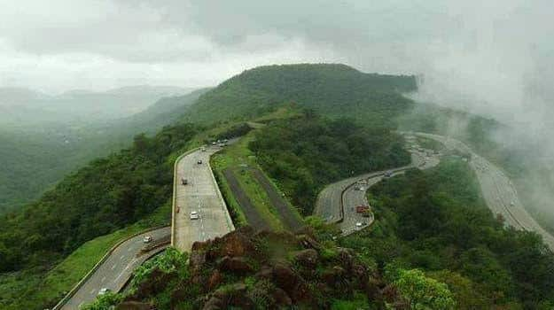

1 / 3
Caption one
2 / 3
Caption Two
3 / 3

Caption Three
3 / 3
Caption four
3 / 3

Caption five
Lonavala is located in the western part of the state of Maharashtra, in the western region of India. It is set amongst the slopes of the Sahyadri mountain range and situated 106 km southeast of Mumbai at an altitude of 625 m above sea level. The weather in Lonavala is pleasant. Summers (April-June) are mild, while winters are cool (November-February). It experiences heavy southwestern monsoon rains between June and September.
The best time to visit Lonavala is between the months of October and May. It is advised not to visit Lonavala in the monsoon season between the months of June and September, as it experiences heavy rainfall during this time.
Lonavala is an important hill station in the state of Maharashtra. It is popularly known as the jewel of the Sahyadri Mountains. Lonavala is set amongst the sylvan hills of the Western Ghats and is a popular gateway from Mumbai and Pune. It also serves as a starting point for tourists interested in visiting the famous, ancient Buddhist rock cut caves of Bhaja and Karla, which are located near this hill station. It also has an important Yoga center near it, for the health conscious traveler.
The area around Lonavala was an important Buddhist center in 2nd century BC and a number of ancient Buddhist rock-cut cave temples can be found in this area. As Lonavala is located in the inhospitable terrain of the Sahyadri mountain range, it was not an important site in terms of history. Chattrapati Shivaji, the founder of the first Maratha Empire, ruled this area.